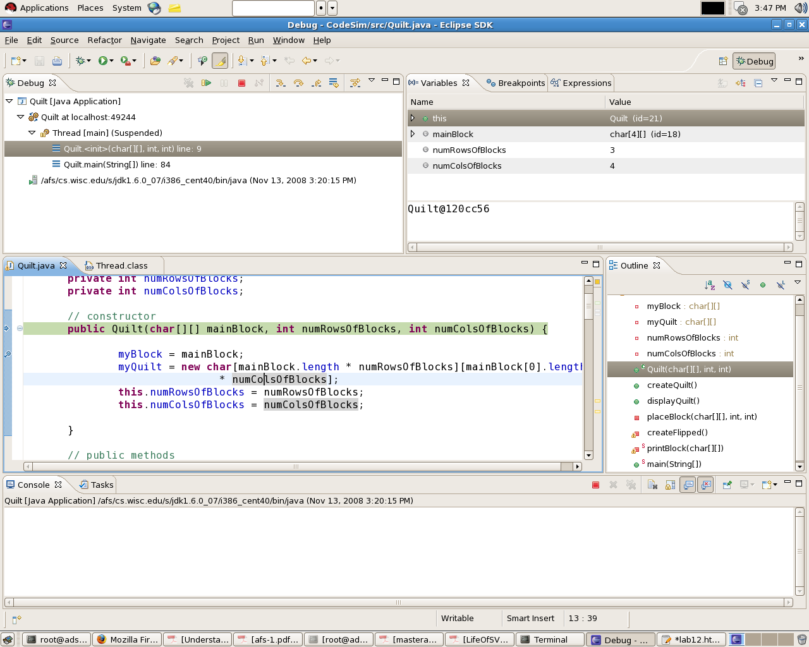
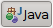
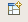
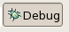
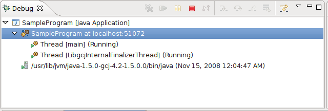
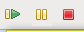
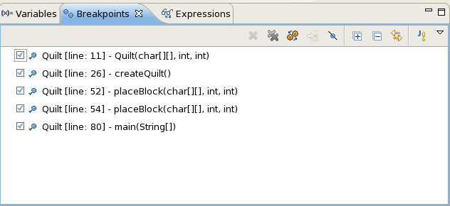
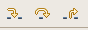
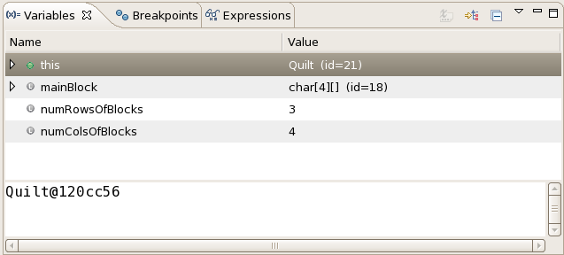
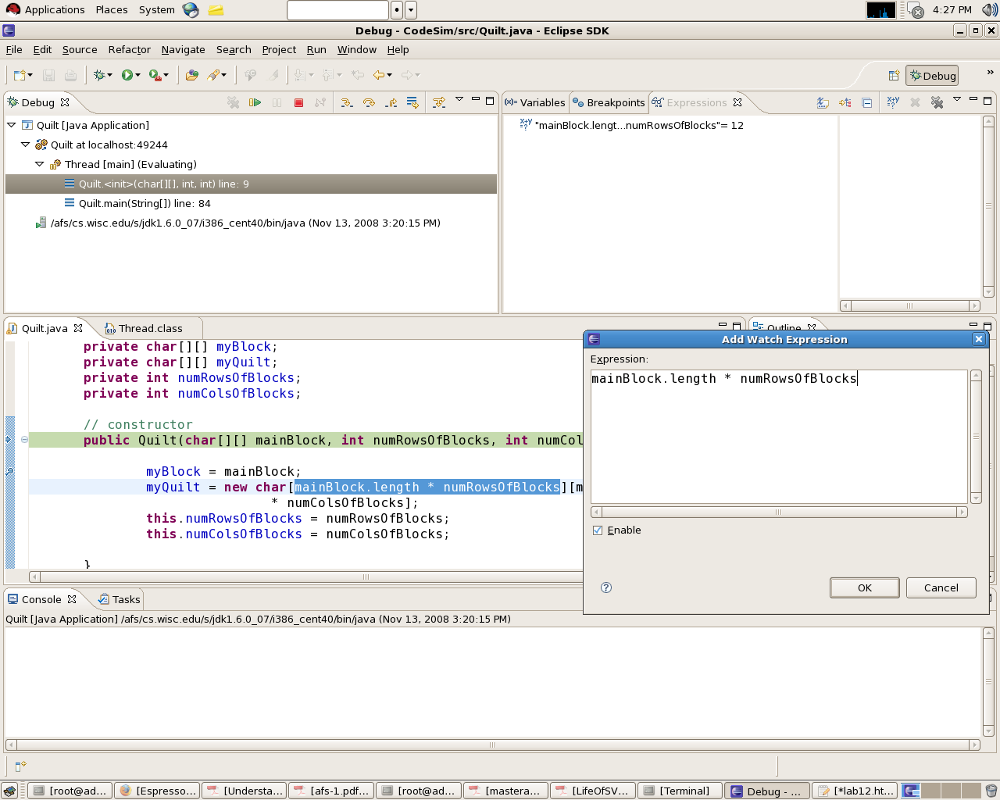

CS302, UW-Madison, Spring 2009
Begin by starting a new project in Eclipse. Name your project DebugLab. Next, download the following files to your src folder inside the DebugLab folder. (An easy way to do this is to right-click on a link and then choose the Save Link As... option.)
Refresh the project, so that Eclipse will recognize the files (right-click on your DebugLab and select "Refresh" or press F5).Whether you're a beginning programmer or have been programming for years, it is a near certainty that you'll make mistakes while programming. These mistakes range from common oversights, such as forgetting a brace or a variable declaration, to subtle errors that appear during the program's execution, which take a lot more effort to fix! We all make mistakes, but there are differences between those that are experienced programmers and those that aren't. One obvious difference is that experienced programmers make fewer syntax errors because they know the language better. Experienced programmers also minimize the number of potential errors they introduce into their program by coding and testing it in steps, which we call incremental program development (what we've been encouraging you to do in your programs).
A key difference between experienced and inexperienced programmers is how they go about finding and fixing the mistakes that they invariably make. You've heard us refer to execution errors as bugs (so named after a poor moth met an untimely death in a relay of one of very early computers causing its program to crash), and finding and fixing those errors referred to as debugging. In this lab we'll learn about the debugging tool in Eclipse that is used by experienced programmers. We'll go through the following basics of Eclipse's debugger:
We'll start with the Debug perspective. A Perspective in Eclipse is an arrangement of windows and tabs that are used for a particular purpose. For programming code, we use the Java perspective, which is how Eclipse typically looks. For debugging code, we use the Debug perspective, which looks like the following:

This shows you the general layout for the debugger being used on a program similar to what you did in the Quilt lab. Note some of the other images in this lab will also show this program to demonstrate debugging in Eclipse.
To use the debugger you'll need to switch to the Debug perspective. To do this, look at the upper-right corner of the Eclipse window where you'll see an icon labeled "Java" that looks like:

. Now look to just to the left of that icon is another unlabeled icon that looks like:
. We use this icocn to open perspectives. Click it and select Debug to open the Debug perspective. Now the Debug icon appears:
in the same location as the others.You can return back to the Java perspective in the same way by clicking on the
icon that opens perspectives and selecting Java. You can also switch between these
perspectives by clicking on the corrresponding icon. Try this now by switching back and
forth between "Debug" and "Java".
First we'll learn how to start (resume), stop (suspend), and end (terminate) a
program's execution. Begin in the Java perspective and open SampleProgram.java
in the editor window, and select the editor window. From the Run menu select
Debug As and then select Java application. You should see that
sample program is printing output to the Console window. Take a look at the source
code and you'll see that this program will run for a long time, which give us time
to learn how to control the program's execution.
Switch to the Debug perspective, and then find the window labeled Debug in the upper left of Eclipse.

In the Debug window at the top is a toolbar of icons that includes three that we'll use:

. These icons are the Resume, Suspend and Terminate buttons. Press the Suspend button (two vertical yellow bars), and notice its effect on the program. Now press the Resume button (a yellow bar and a green arrow). Try suspending and resuming a few times. Finally, press the Terminate button (red square) to end the program.The previous buttons gave us general control over the program's execution, but they don't enables us to easily stop at a specific point in our program. To stop at a specific line in the code, we use breakpoints.
Take a look at the editor window in the Debug perspective (middle left), and notice the grayish vertical bar at the far left of that window. A breakpoint is set by double-clicking in this bar a the line where you want to stop (break) the program's execution. Try this out by double-clicking in this region at the same height as the first call to System.out.println(). An icon appears in this bar indicating that you've set a breakpoint at this line of code.
Run the program in debug mode again, and you'll see that execution of the program automatically suspends at the breakpoint. In fact, execution is suspended just before executing the line of code associated with the breakpoint. Also note that the icon in the bar changes to show that you've suspended at that breakpoint.
Insert another breakpoint at the method call to innerLoop() method and another at the final call to System.out.println() in the main method. Now click Resume. Click Resume a few more times. Do you understand what is happening?
Find the Breakpoints window in the upper right of the Eclipse window, which looks like (you may have to click on the Breakpoints tab to get it to show):

Each of the breakpoints you have set should appear in this window (they'll be different than the ones shown in the image above). This window provides information about each breakpoint that we have set including the class name, line number, and method name. This can help us find where the breakpoint is in our code. The fastest way to find the code corresponding to the breakpoint is to double click the entries in the Breakpoints window. This brings that line of code into the editor window. (Note that if you click on a line of code in the editor window, its line number is displayed at the very bottom of the Eclipse window. You can also turn on line numbers by Window->Preferences->+General->+Editors->Text Editors and then check the "Show line numbers" option)
You can disable breakpoints by unchecking them in the Breakpoints window or by by right-clicking on its listing in the Breakpoints window and the selecting Disable. Try disabling the second call to System.out.println, and then Resume execution of your program and notice the effect. Also note that the icon in the editor window show the breakpoint as hollow to indicate that it is disabled.
Now enable that breakpoint again in the analogous way.
You can also remove breakpoints. Let's remove the first breakpoint. Right-click on it in the Breakpoints window and select remove. Note that you could also have selected the breakpoint to be removed and then click on the grey X in the toolbar of the Breakpoints window.
You can also control break points by right-clicking on them in the bar of the editor window and then choosing the desired action. Also note that double-clicking on a breakpoint in left bar of the editor window also removes it.
Once we've stopped at a breakpoint, often you'll want finer control over the the execution of the subsequent lines of code. The debugger has buttons that provide us "Step Into" , "Step Over" and "Step Return" control that look like:

. They are found in the tool bar at the top of the debug window and to the right of the buttons we used to resume and suspend execution.Start the sample program again. If it is still running, do you remember which button to use to terminate it? Make sure that you have at least one breakpoint set or else the step buttons cannot be used.
First find the Step Over button and click it a few times. The debugger
will step through the source code one line at a time. If the line of code calls
a method, it will step "over" the method by executing it entirely rather than
line by line. You'll see this happen with the System.out.println() and
innerLoop() method calls. Step Over treats a method call as a single
line of code -- executing it in one step and then moving on --
just like any other line of code.
Now find the Step Into button and click it a few times. This, too, will
cause the debugger to step through the code line by line, but now it will step
"into" any methods that are called. This allows you to execute each line of
code in a method's body to take a closer look at what the method is doing. Note
that if you've downloaded the code for the Java API you can then step into and
view the code of classes and methods provided by Java, such as
System.out.println(). You can trust that the code provided by Java
works as specified so your program is the best place to look for bugs.
Once you feel you understand how Step Into works, then find the Step Return button. Each time you press it, execution will continue through the current method and stop just after the method returns. Depending on how many methods you have stepped into, you may need to press this button several times before you are returned to the main method of the sample program that you're executing.
What we've seen so far is that the debugger gives us control over a program's execution to help us figure out what is going wrong. There's one last piece of the puzzle to make the debugger truely useful for helping us find and fix errors. We've learned from tracing code, that we step through the statements of our program and record the changes that are made to the variables as each statement is executed. By recording the changes to the variables, we can see if our program is working the way we expect. If a variable gets a value other than what is expected, then we have an important clue that ppoints suspicion at that lilne of code or ones that were executed before it. A debugger must also provide us a way to see the contents of variables.
If you stopped the sample program at the end of the last exercise, start it again and make sure you have at least one breakpoint set.
Move the mouse over one of the variable names in the source code window. You should see a window pop-up, and if the lines of code corresponding to that variable have executed, the pop-up window will show the value currently stored in that variable.
There's also a way to watch more than one variable without using the mouse. Find the Variables window in the upper right of the Eclipse screen, which looks like :

you may need to click on the Varaibles tab if the Breakpoints window is on top. The Variables window shows you a list of the currently defined variables, along with the value stored in each.
Click Resume a few more times and watch the values change.
You can also change a variable's value for testing. To do this, click on one of the variables in the Variables window. The value of that variable now appears in the editor region at the bottom of the Variables window. Change the value, and then save the change with by typing Ctrl+S. Notice that the value displayed for the variable (and the value stored in the variable's memory) has been updated.
You can also monitor how the values of an expression changes over time. Highlight and copy (ctrl-C) any expression (in the source code displayed in the editor window) that you want to watch. Now right click on the "Expressions window" and click on "Add Watch Expression". If you do not see the Expressions window, click the Window menu -> Show View and select Expressions. (If you do not see Expressions under Show View, select Other... -> Debug -> Expressions.) Paste the copied expression into the text area of the pop-up window you see and click Ok:

Now you'll be able to see the value of this expression as it changes during the execution of your program.
Now let's put to use the Eclipse debugging facilities you've just learned. The source files that were downloaded at the start of this lab are used for these tasks.
We will start with the buggy StringBugs.java program that has two
methods; one to count the number of occurrences of a character in a string and
another to reverse a string. Fix the bugs and make it work. Tell your lab TA the
bugs you fixed.
In lab 5 you debugged the Guess.java program without using
Eclipse's debugger. Now try debugging this program again but using Eclispe's
debugger. You don't have to completely fix the program, but use the debugger
to find and fix as many errors as you can in the remaining lab time; then
tell your lab TA which bugs you've fixed.